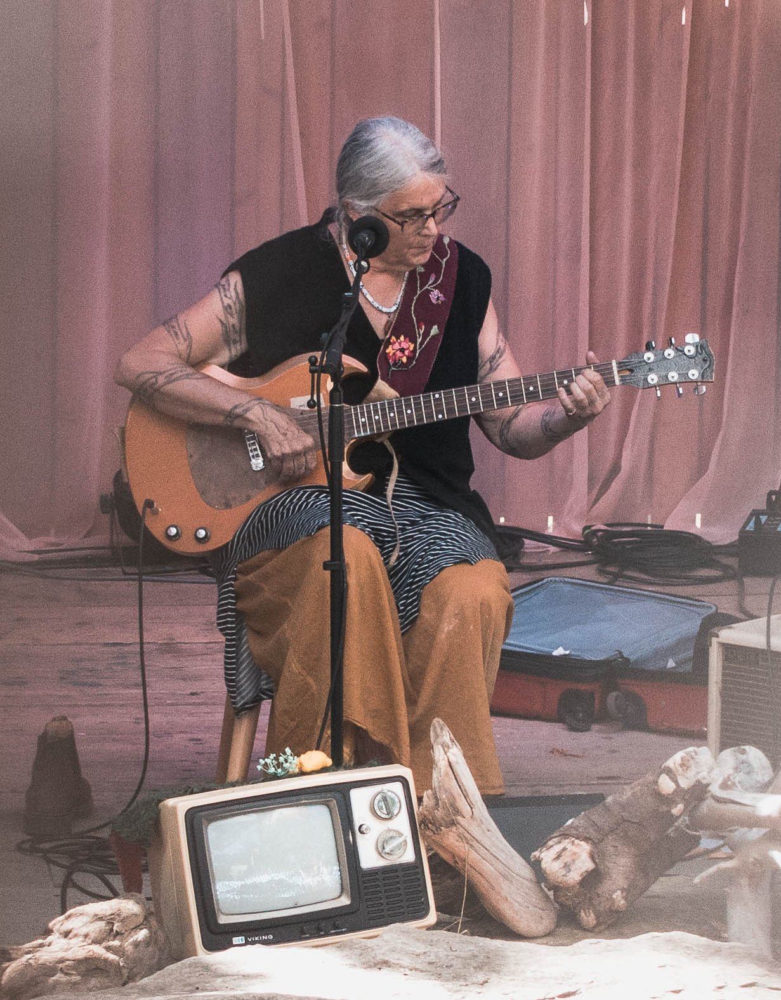
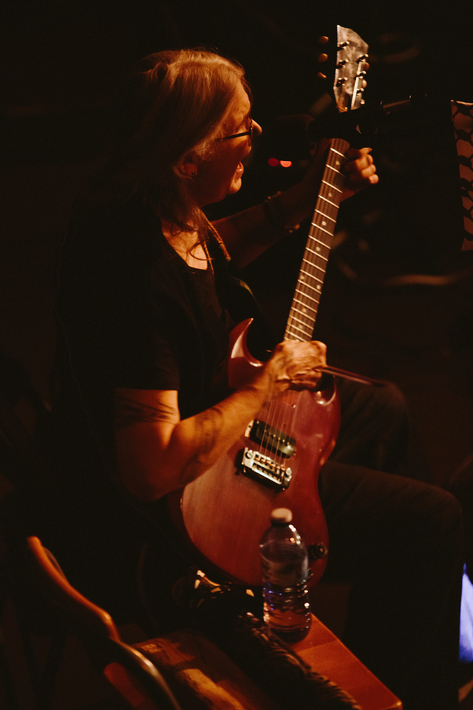
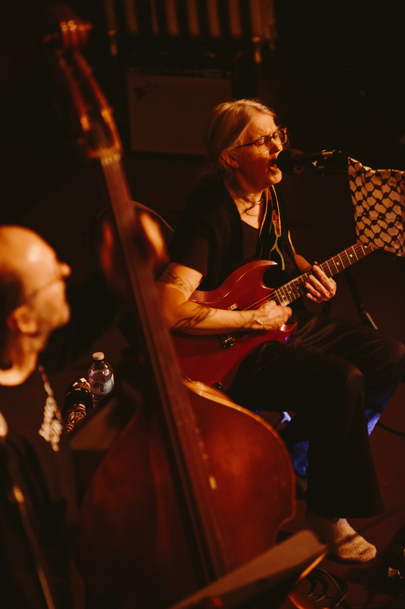
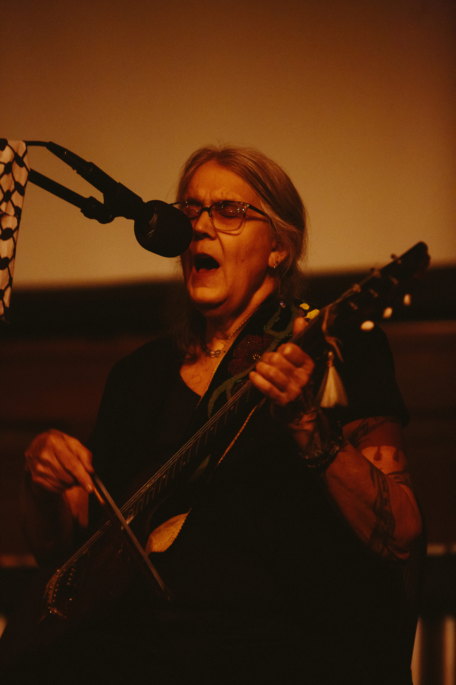
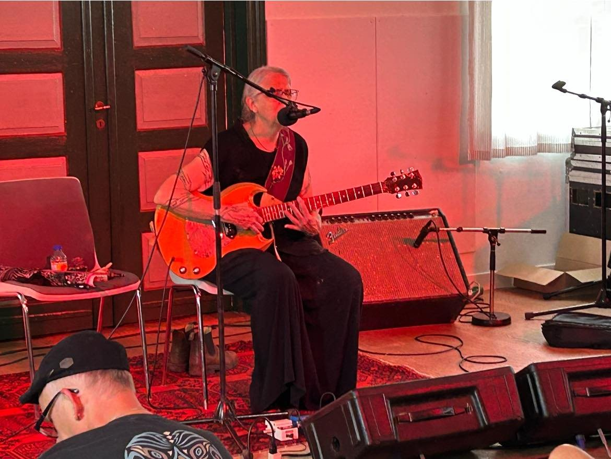
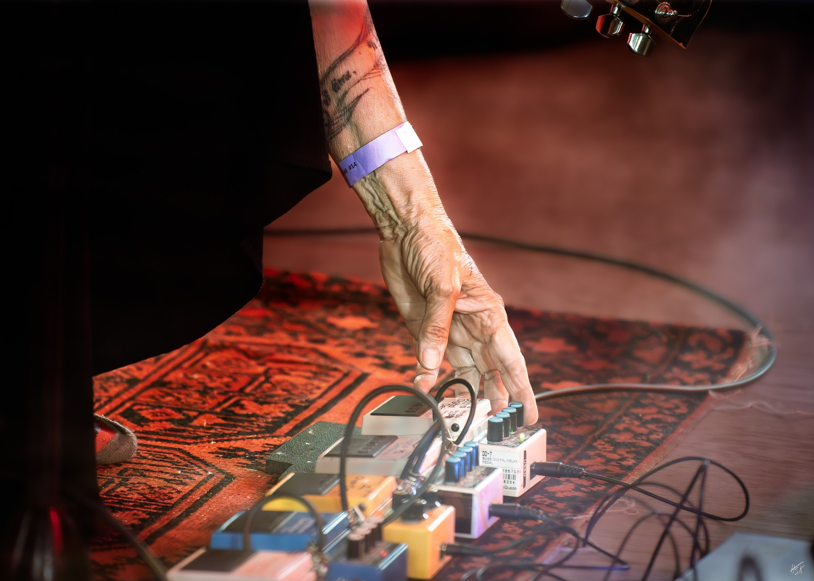
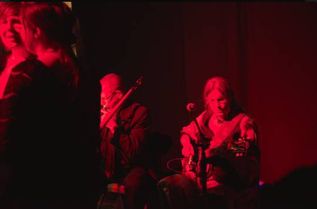
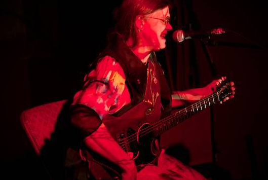
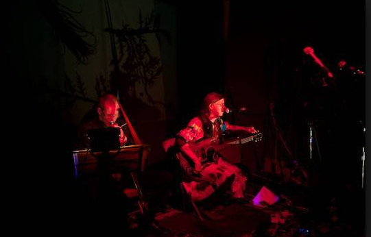

Kathleen Yearwood has worked as a professional musician and composer for over fifty years. She plays electric guitar and sings using extended vocal techniques that push past anything you'd call conventional folk delivery, building songs out of noise and musique concrète as much as melody.
She trained at Capilano College in Vancouver in 1977, then went east to study the physics of music and electronic composition at McGill and Concordia in Montreal through the early '80s. Six of her experimental pieces aired on CBC Montreal's Alternances in that period. She's spent the decades since touring steadily: Vancouver and Winnipeg Folk Festivals, Mariposa, Edmonton Folk Music Festival, a two-month run through Denmark, Norway, England, France, Germany, Belgium, and Yugoslavia in 1991, repeat tours through Norway with her band Cheval de Guerre, FIMAV in Québec, the Kuryokhin International Festival in St. Petersburg, and multiple passes through Slovenia, Croatia, and Iceland. In the early '90s she was the soloist for Rita McKeough's experimental operas In Bocca Al Lupo and Take It to the Teeth. She's also played for audiences inside institutions — Edmonton Max, the Burnaby Centre for Women, Riverview Hospital — work she doesn't separate from the rest of her practice.
The records carry titles like Book of Hate, Folk Songs, Requiem/World in Ashes, Apokalypsis, and Yes, You Were Born to Die, released mostly on her own imprint, Voice of the Turtle.
She's also a writer and visual artist. Her novel Self-Mutilation was first published by the University of Oslo in 2003 and later reissued by Dumpster Fire Press, which also put out her second novel, Suspicion. Some editions go out hand-bound and illustrated by her own hand. She paints and prints as well, watercolors and linocuts mostly, sold directly through artpal.com.
Eugene Chadbourne wrote that "there are singer/songwriters, and then there is Kathleen Yearwood, who can feel free to clobber them all over the head." R. Murray Schafer put it more bluntly: "This is not composition." Peggy Seeger, watching from the crowd at the Edmonton Folk Music Festival, reportedly just said: "Somebody please stop her..." She hasn't stopped.

Mailing list